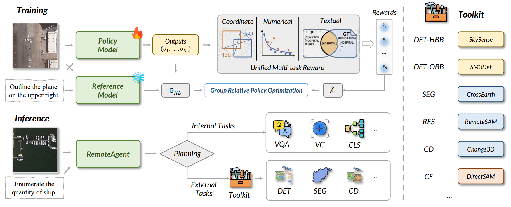

Our Works
Each card links to one local project page and keeps direct access to the paper and code when available.



RemoteAgent: Bridging Vague Human Intents and Earth Observation with RL-based Agentic MLLMs
An agentic EO framework that interprets vague user queries, solves suitable tasks internally, and routes dense precision-critical tasks to specialized tools.
Agentic MLLM
VagueEO
Tool routing